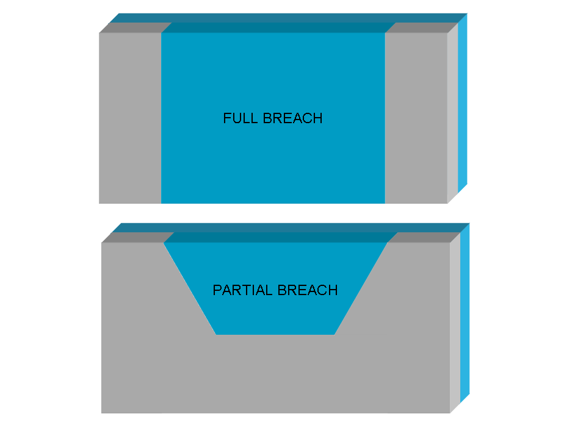

Requested input: Last changed: $27 februar 2013 09:40:00 CET $
The required input are:
- a DTM including the lake bathimetry and the dam elevation over the ground [elev],
- a map with the initial condition easily obtained with r.lake command [lake],
- a dam breach width raster map [dambreak] which can be obtained using r.dam grass add-on script,
- a Manning's roughness coefficient raster map, easily obtained from a reclassification of a land use map
(r.reclass) [manning],
- the simulation time length expressed in seconds [tstop].
Output map and additional output options:
First the user can set a specific time lag [deltat] expressed in seconds, that is used for the output map (depth and velocity) generation.
and also an additional series of instants [opt_t],expressed in seconds from the beginning of the simulation), used to generate further water flow depth and velocity maps
at desired precise times.
The user can choose between one of the following time series raster maps as output:
- flow depth [h],
- flow velocity [vel],
- a raster map with maximum water depth [hmax], relative flooding intensity [i_hmax], that is the product of water depth and velocity, and the relative time of occurence[t_hmax],
- a raster map with maximum water velocity [vmax], relative flooding intensity [i_vmax], and the relative time of occurence[t_vmax],
- a raster map with maximum flooding intensity [imax] and the relative time of occurence[t_imax].
- a raster map with the time of arriving of the Wave-Front [wavefront]
where and the raster maps are coded as "prefix" + "_" + "elapsed seconds": e.g. mydepth_125.
Obviously at least one output map prefix must be specified.
The unit of measurements of output raster maps are expresssed using the International System (S.I.).
Options:
Using a specific flag, the user can obtain another raster map with flow directions that can be visualized using a specific display command
(d.rast.arrow) of the GRASS GIS software.
Actually two different dam failure type are considered by the command: (i) full breach, (ii) partial breach.

In case of total istantaeous dam break (configuration i), the initial velocity is computed directly applying the SWE at the first time step;
while in case of partial dam breach (configuration ii) the user can choose between don't use any hypothesis, like in the previous configuration,
or evaluate the initial velocity using the overflow spillway equation:
V = 0.4 √(2 g h)
where V is the water flow velocity expressed in m/s,
g is the gravitational acceleration expressed in m/s2
and h is the water depth in correspondence of the dam breach expresssed in meters (m).
Optionally the user may modify the initial timestep used for the numerical solution of the SWE (default value = 0.01 s), nevertheless the timestep [],
and choose a specific failure tipe corresponding to different computational method for the initial velocity estimation.
Notes
(GRASS ANSI C command)
AUTHORS
Roberto Marzocchi (e-mail) and Massimiliano Cannata (e-mail).
The GRASS tool was developed by Institute of earth science (IST),
University of applied science of Italian Switzerland (SUPSI), Lugano - Division of geomatics web-page
Actually the debug is assured by:
- Gter srl (Genoa, Italy)
- IST -SUPSI (Lugano, Switzerland)
The numerical model, originally developed by the National Center for Computational Hydroscience and Engineering of the University of Mississippi,
has been reformulated and modified by the authors introducing important new features to consider the numerical stability and the type of dam failure,
and currently is written in ANSI C programming language within GRASS.
SEE ALSO
r.lake,
r.reclass,
d.rast.arrow,
r.inund.fluv.
Details of the numerical model are presented in references.
Details of use and developing of are available here.
REFERENCES
[1] Cannata M. & Marzocchi R. (2012). Two-dimensional dam break flooding simulation: a GIS embedded approach. - Natural Hazards 61(3):1143-1159
[2] Pdf presentation of the work at the "X Meeting degli Utenti Italiani di GRASS - GFOSS" (It) web-page
[3] Pdf presentation of the work at the FOSS4G 2009 (En) - web-page
[4] Pdf presentation of the work at the Geoitalia 2011 conference (En)- document